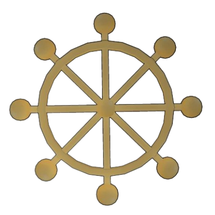

:format(webp)/hull.geekship.com.br/wp-content/uploads/2024/06/mahoraga-gritando-perto-de-um-carro-verde.jpg)



Carregando
A Espada de Oito Cabos Divergente Sila Divina General Mahoraga, frequentemente referido simplesmente como Mahoraga, é o shikigami mais poderoso da Técnica das Dez Sombras . Ao longo de sua história, nenhum usuário desta técnica amaldiçoada jamais conseguiu domá-lo, com a única exceção de Sukuna.
Mahoraga é conjurado pelo usuário através de um encantamento que recita " Com este tesouro, eu invoco... " antes de invocar o nome do General Divino. Em vez de formar uma sombra com as mãos para manifestar o shikigami, o usuário simplesmente estende ambos os braços para a frente em um leve ângulo ascendente com os punhos fechados.
O próprio shikigami é uma figura humanoide imponente e musculosa com quatro asas que se projetam de suas órbitas oculares e um apêndice semelhante a uma cauda que se estende da parte de trás de sua cabeça. Flutuando logo acima disso está uma grande roda de oito pontas que gira conforme Mahoraga responde a novos estímulos. "O Encantamento de Furu" dos Dez Tesouros Sagrados e esta roda representam um "ciclo perfeito" e "harmonia". Mahoraga também usa calças pretas e uma faixa branca em volta da cintura.
Mahoraga tem força para estilhaçar concreto ou atingir alguém através de vários prédios com um único golpe, e sua velocidade é grande o suficiente para surpreender até mesmo alguém como Satoru Gojo. Sua arma principal é a Espada do Extermínio, uma lâmina presa ao seu antebraço que é envolta em energia positiva, tornando-a especialmente eficaz contra espíritos amaldiçoados.
O poder mais notável do General Divino é a adaptação a todos os fenômenos, tornada visível através do giro de sua roda. Se o General for atingido por um ataque específico, a roda gira assim que o ataque é analisado, e Mahoraga se adapta; se seu adversário usar a mesma técnica novamente, Mahoraga a contra-atacará a partir de então. De modo geral, as adaptações de Mahoraga podem ser de natureza defensiva (tornando-se fisicamente resistente/imune a ataques enquanto cura quaisquer ferimentos sofridos antes da adaptação), auxiliares (por exemplo, permitindo que o General veja ataques normalmente invisíveis ), bem como ofensivas permitindo que Mahoraga modifique as propriedades de seus próprios ataques para superar e contornar as defesas inimigas, como alternar entre energia positiva e amaldiçoada ao redor de sua espada dependendo se enfrenta uma maldição ou um feiticeiro humano, ou desenvolver cortes que atravessam o espaço para superar uma barreira do infinito.
O processo de adaptação de Mahoraga começa analisando um ataque assim que o recebe, sendo seu progresso indicado pelo número de vezes que a roda de oito pontas gira. Após um certo período de tempo, a adaptação é concluída. Durante esse tempo, se Mahoraga for atingido pelo mesmo ataque mais vezes, o processo é acelerado a cada vez. Mesmo após a conclusão de sua adaptação, Mahoraga pode continuar sua análise e desenvolver diferentes maneiras de neutralizar o fenômeno.